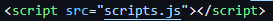

Muitas pessoas já pensaram em criar um site para algo, porém essa ideia nunca saiu do papel devido à falta de conhecimento para pôr em prática, com isso, resolvi criar este site pra ensinar como fazer um. Espero que goste!
Pra inicio, é importante encontrar um site que lhe ofereça tal serviço.Uma das recomendações é o site Github, mais adiante ensinaremos como iniciar a partir dele, porém, caso não se sinta confortável com essa opção, existem também os sites Vercel e Surge.
De início, você irá precisar criar uma conta no Github.Para isso você entra nesse link e clica em "create a new public repository" no painel abaixo:

Após criar sua conta, você será redirecionado para uma página com a seguinte aparência:

Você,então, irá colocar o nome que deseja para o site e vai marcar a opção "add a Readme file" .Feito isso,você clica em "Create repository" e será redirecionado para a seguinte página:

Estando nessa pagina, você pode editar o arquivo "Readme" e colocar um titulo e uma descrição, apertando em "Commit changes" e confirmando para finalizar a edição.
Para colocar o site no ar,você deve ir nas configurações e clicar na opção "Pages" ,então irá na parte "branch" clicar em "none",selecionar a opção "main" e então apertar em "save", com isso o seu site vai começar a ser criado.


ATENÇÃO: o site demora um tempo pra ser completamente criado, então espere um pouco e reinicie a página para o seu link aparecer.
Tendo feito isso, começaremos a programar o site,no qual vamos usar, por enquanto, as linguagens HTML e a CSS, que serão exploradas mais adiante.
O HTML é a linguagem responsável pelo "conteúdo" do seu site, nele você irá colocar os textos, imagens ou links que você quer colocar no seu site.
Pra início, você deve criar um arquivo denomindado de "index.html",no qual pode ser criado ao apertar na seta ao lado do botão "add file" e depois em "create new file".
Ao criar você vai ser redirecionado para a parte de edição do arquivo, no qual você irá colocar os seguintes comandos:
Esses comandos servem para definir o tipo de código utilizado e o idioma do site.
Os tipos de comandos utilizados no site vão depender de que site você vai querer criar então, para facilitar, aqui está uma lista com todos os comandos do tipo HTML:Referências.
O CSS é a linguagem responsável pela aparência do seu site, nele você vai definir os tamanhos das imagens, as cores da tela de fundo e das letras, entre outros.
De início você, também deve criar um outro arquivo, no qual pode ter qualquer nome desde que termine com ".css" e irá linkar esse arquivo com o do HTML, para isso você deve colocar o seguinte comando neste arquivo:
O Layout Responsivel serve pra fazer o site ter uma melhor experiência para o usúario independente em que dispositivo ele esteja, sendo muito utilizado para melhorar a interface em si.
Para adiconalo no seu site basta colocar os codigos que deseja no arquivo atual do seu site, não precisando adicionar um novo arquivo.
Referências: W3schools(HTML), W3schools(CSS)
O JavaScript é a linguagem utilizada para as interações do usuário, servindo pra diversas coisas, como sistema de cliques, menus, sistema de cadastro e login, entre outros.
Para colocar a linguagem você deve criar um arquivo com qualquer nome e colocar ".js" no fim e colocar a seguinte linha de código no arquivo html da sua pagina (colocar o nome do arquivo no lugar do "script.js")
Aqui está um site com a lista de comandos em JavaScript:Referências